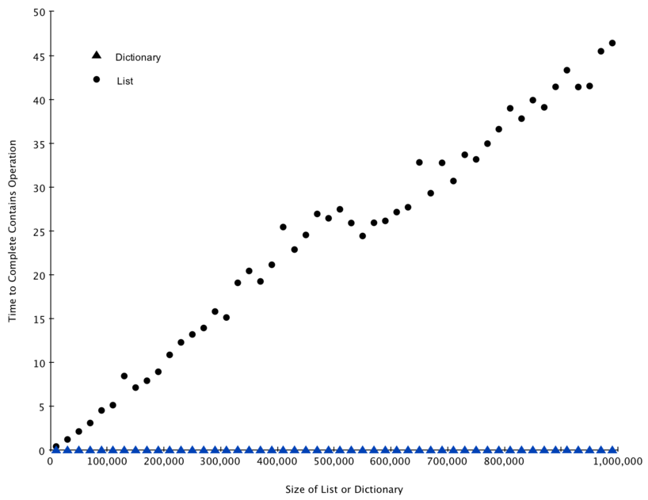

Algorithm Analysis¶
{chap:anal}
Objectives¶
- To understand why algorithm analysis is important.
- To be able to use “Big-O” to describe execution time.
- To understand the “Big-O” execution time of common operations on Python lists and dictionaries.
- To understand how the implementation of Python data impacts algorithm analysis.
- To understand how to benchmark simple Python programs.
{escapeinside={#//}{^^M}}
What Is Algorithm Analysis?¶
{knuth} It is very common for beginning computer science students to compare their programs with one another. You may also have noticed that it is common for computer programs to look very similar, especially the simple ones. An interesting question often arises. When two programs solve the same problem but look different, is one program better than the other?
In order to answer this question, we need to remember that there is an important difference between a program and the underlying algorithm that the program is representing. As we stated in Chapter 1, an algorithm is a generic, step-by-step list of instructions for solving a problem. It is a method for solving any instance of the problem such that given a particular input, the algorithm produces the desired result. A program, on the other hand, is an algorithm that has been encoded into some programming language. There may be many programs for the same algorithm, depending on the programmer and the programming language being used.
To explore this difference further, consider the function shown in Listing {sum1}. This function solves a familiar problem, computing the sum of the first n integers. The algorithm uses the idea of an accumulator variable that is initialized to 0. The solution then iterates through the n integers, adding each to the accumulator.
[caption={Summation of the First \textit{n} Integers},label=sum1,index={sumOfN},float=htb]
def sumOfN(n):
theSum = 0
for i in range(1,n+1):
theSum = theSum + i
return theSum
Now look at the function in Listing {sum2}. At first glance it may look strange, but upon further inspection you can see that this function is essentially doing the same thing as the previous one. The reason this is not obvious is poor coding. We did not use good identifier names to assist with readability, and we used an extra assignment statement during the accumulation step that was not really necessary.
[caption={Another Summation of the First \textit{n} Integers},label=sum2,float=htb]
def foo(tom):
fred = 0
for bill in range(1,tom+1):
barney = bill
fred = fred + barney
return fred
The question we raised earlier asked whether one function is better than another. The answer depends on your criteria. The function sumOfN is certainly better than the function foo if you are concerned with readability. In fact, you have probably seen many examples of this in your introductory programming course since one of the goals there is to help you write programs that are easy to read and easy to understand. In this course, however, we are also interested in characterizing the algorithm itself. (We certainly hope that you will continue to strive to write readable, understandable code.)
Algorithm analysis is concerned with comparing algorithms based upon the amount of computing resources that each algorithm uses. We want to be able to consider two algorithms and say that one is better than the other because it is more efficient in its use of those resources or perhaps because it simply uses fewer. From this perspective, the two functions above seem very similar. They both use essentially the same algorithm to solve the summation problem.
At this point, it is important to think more about what we really mean by computing resources. There are two different ways to look at this. One way is to consider the amount of space or memory an algorithm requires to solve the problem. The amount of space required by a problem solution is typically dictated by the problem instance itself. Every so often, however, there are algorithms that have very specific space requirements, and in those cases we will be very careful to explain the variations.
As an alternative to space requirements, we can analyze and compare algorithms based on the amount of time they require to execute. This measure is sometimes referred to as the “execution time” or “running time” of the algorithm. One way we can measure the execution time for the function sumOfN is to do a benchmark analysis. This means that we will track the actual time required for the program to compute its result. In Python, we can benchmark a function by noting the starting time and ending time with respect to the system we are using. In the time module there is a function called time that will return the current system clock time in seconds since some arbitrary starting point. By calling this function twice, at the beginning and at the end, and then computing the difference, we can get an exact number of seconds (fractions in most cases) for execution.
[caption={Timing the Summation},label=sum11,index={sumOfN},float=htb]
import time
def sumOfN2(n):
start = time.time()
theSum = 0
for i in range(1,n+1):
theSum = theSum + i
end = time.time()
return theSum,end-start
Listing {sum11} shows the original sumOfN function with the timing calls embedded before and after the summation. The function returns a tuple consisting of the result and the amount of time (in seconds) required for the calculation. If we perform 5 invocations of the function, each computing the sum of the first 10,000 integers, we get the following:
{}
>>>for i in range(5):
print("Sum is %d required %10.7f seconds"%sumOfN(10000))
Sum is 50005000 required 0.0018950 seconds
Sum is 50005000 required 0.0018620 seconds
Sum is 50005000 required 0.0019171 seconds
Sum is 50005000 required 0.0019162 seconds
Sum is 50005000 required 0.0019360 seconds
We discover that the time is fairly consistent and it takes on average about 0.0019 seconds to execute that code. What if we run the function adding the first 100,000 integers?
>>>for i in range(5):
print("Sum is %d required %10.7f seconds"%sumOfN(100000))
Sum is 5000050000 required 0.0199420 seconds
Sum is 5000050000 required 0.0180972 seconds
Sum is 5000050000 required 0.0194821 seconds
Sum is 5000050000 required 0.0178988 seconds
Sum is 5000050000 required 0.0188949 seconds
>>>
Again, the time required for each run, although longer, is very consistent, averaging about 10 times more seconds. For n equal to 1,000,000 we get:
>>>for i in range(5):
print("Sum is %d required %10.7f seconds"%sumOfN(1000000))
Sum is 500000500000 required 0.1948988 seconds
Sum is 500000500000 required 0.1850290 seconds
Sum is 500000500000 required 0.1809771 seconds
Sum is 500000500000 required 0.1729250 seconds
Sum is 500000500000 required 0.1646299 seconds
>>>
In this case, the average again turns out to be about 10 times the previous.
{} Now consider Listing {sum3}, which shows a different means of solving the summation problem. This function, sumOfN3, takes advantage of a closed equation \($\sum_{i=1}^{n} i = \frac {(n)(n+1)}{2}$\) to compute the sum of the first n integers without iterating.
[caption={Summation Without Iteration},label=sum3,float=htb]
def sumOfN3(n):
return (n*(n+1))/2
If we do the same benchmark measurement for sumOfN3, using five different values for n (10,000, 100,000, 1,000,000, 10,000,000, and 100,000,000), we get the following results:
Sum is 50005000 required 0.00000095 seconds
Sum is 5000050000 required 0.00000191 seconds
Sum is 500000500000 required 0.00000095 seconds
Sum is 50000005000000 required 0.00000095 seconds
Sum is 5000000050000000 required 0.00000119 seconds
There are two important things to notice about this output. First, the times recorded above are shorter than any of the previous examples. Second, they are very consistent no matter what the value of n. It appears that sumOfN3 is hardly impacted by the number of integers being added.
But what does this benchmark really tell us? Intuitively, we can see that the iterative solutions seem to be doing more work since some program steps are being repeated. This is likely the reason it is taking longer. Also, the time required for the iterative solution seems to increase as we increase the value of n. However, there is a problem. If we ran the same function on a different computer or used a different programming language, we would likely get different results. It could take even longer to perform sumOfN3 if the computer were older.
We need a better way to characterize these algorithms with respect to execution time. The benchmark technique computes the actual time to execute. It does not really provide us with a useful measurement, because it is dependent on a particular machine, program, time of day, compiler, and programming language. Instead, we would like to have a characterization that is independent of the program or computer being used. This measure would then be useful for judging the algorithm alone and could be used to compare algorithms across implementations.
Big-O Notation¶
When trying to characterize an algorithm’s efficiency in terms of execution time, independent of any particular program or computer, it is important to quantify the number of operations or steps that the algorithm will require. If each of these steps is considered to be a basic unit of computation, then the execution time for an algorithm can be expressed as the number of steps required to solve the problem. Deciding on an appropriate basic unit of computation can be a complicated problem and will depend on how the algorithm is implemented.
A good basic unit of computation for comparing the summation algorithms shown earlier might be to count the number of assignment statements performed to compute the sum. In the function sumOfN, the number of assignment statements is 1 (\(theSum = 0\)) plus the value of n (the number of times we perform \(theSum=theSum+i\)). We can denote this by a function, call it T, where \(T(n)=1 + n\). The parameter n is often referred to as the “size of the problem,” and we can read this as “T*(*n) is the time it takes to solve a problem of size n, namely 1+*n* steps.”
In the summation functions given above, it makes sense to use the number of terms in the summation to denote the size of the problem. We can then say that the sum of the first 100,000 integers is a bigger instance of the summation problem than the sum of the first 1,000. Because of this, it might seem reasonable that the time required to solve the larger case would be greater than for the smaller case. Our goal then is to show how the algorithm’s execution time changes with respect to the size of the problem.
Computer scientists prefer to take this analysis technique one step further. It turns out that the exact number of operations is not as important as determining the most dominant part of the \(T(n)\) function. In other words, as the problem gets larger, some portion of the \(T(n)\) function tends to overpower the rest. This dominant term is what, in the end, is used for comparison. The order of magnitude function describes the part of \(T(n)\) that increases the fastest as the value of n increases. Order of magnitude is often called Big-O notation (for “order”) and written as \(O(f(n))\). It provides a useful approximation to the actual number of steps in the computation. The function \(f(n)\) provides a simple representation of the dominant part of the original \(T(n)\).
In the above example, \(T(n)=1+n\). As n gets large, the constant 1 will become less and less significant to the final result. If we are looking for an approximation for \(T(n)\), then we can drop the 1 and simply say that the running time is \(O(n)\). It is important to note that the 1 is certainly significant for \(T(n)\). However, as n gets large, our approximation will be just as accurate without it.
As another example, suppose that for some algorithm, the exact number of steps is \(T(n)=5n^{2}+27n+1005\). When n is small, say 1 or 2, the constant 1005 seems to be the dominant part of the function. However, as n gets larger, the \(n^{2}\) term becomes the most important. In fact, when n is really large, the other two terms become insignificant in the role that they play in determining the final result. Again, to approximate \(T(n)\) as n gets large, we can ignore the other terms and focus on \(5n^{2}\). In addition, the coefficient \(5\) becomes insignificant as n gets large. We would say then that the function \(T(n)\) has an order of magnitude \(f(n)=n^{2}\), or simply that it is \(O(n^{2})\).
Although we do not see this in the summation example, sometimes the performance of an algorithm depends on the exact values of the data rather than simply the size of the problem. For these kinds of algorithms we need to characterize their performance in terms of best case, worst case, or average case performance. The worst case performance refers to a particular data set where the algorithm performs especially poorly. Whereas a different data set for the exact same algorithm might have extraordinarily good performance. However, in most cases the algorithm performs somewhere in between these two extremes (average case). It is important for a computer scientist to understand these distinctions so they are not misled by one particular case.
| f(n) | Name |
|---|---|
| \(1\) | Constant |
| \(\log n\) | Logarithmic |
| \(n\) | Linear |
| \(n\log n\) | Log Linear |
| \(n^{2}\) | Quadratic |
| \(n^{3}\) | Cubic |
| \(2^{n}\) | Exponential |
{Common Functions for Big-O} {fntable}
A number of very common order of magnitude functions will come up over and over as you study algorithms. These are shown in Table {fntable}. In order to decide which of these functions is the dominant part of any \(T(n)\) function, we must see how they compare with one another as n gets large. Figure {graphfigure} shows graphs of the common functions from Table {fntable}. Notice that when n is small, the functions are not very well defined with respect to one another. It is hard to tell which is dominant. However, as n grows, there is a definite relationship and it is easy to see how they compare with one another.
{Plot of Common Big-O Functions} {graphfigure}
As a final example, suppose that we have the fragment of Python code shown in Listing {dummycode}. Although this program does not really do anything, it is instructive to see how we can take actual code and analyze performance.
[caption={Example Python Code},label=dummycode,float=htbp]
a=5
b=6
c=10
for i in range(n):
for j in range(n):
x = i * i
y = j * j
z = i * j
for k in range(n):
w = a*k + 45
v = b*b
d = 33
The number of assignment operations is the sum of four terms. The first term is the constant 3, representing the three assignment statements at the start of the fragment. The second term is \(3n^{2}\), since there are three statements that are performed \(n^{2}\) times due to the nested iteration. The third term is \(2n\), two statements iterated n times. Finally, the fourth term is the constant 1, representing the final assignment statement. This gives us \(T(n)=3+3n^{2}+2n+1=3n^{2}+2n+4\). By looking at the exponents, we can easily see that the \(n^{2}\) term will be dominant and therefore this fragment of code is \(O(n^{2})\). Note that all of the other terms as well as the coefficient on the dominant term can be ignored as n grows larger.
{Comparing \(T(n)\) with Common Big-O Functions} {graphfigure2}
Figure {graphfigure2} shows a few of the common Big-O functions as they compare with the \(T(n)\) function discussed above. Note that \(T(n)\) is initially larger than the cubic function. However, as n grows, the cubic function quickly overtakes \(T(n)\). It is easy to see that \(T(n)\) then follows the quadratic function as \(n\) continues to grow.
An Anagram Detection Example¶
A good example problem for showing algorithms with different orders of magnitude is the classic anagram detection problem for strings. One string is an anagram of another if the second is simply a rearrangement of the first. For example, 'heart' and 'earth' are anagrams. The strings 'python' and 'typhon' are anagrams as well. For the sake of simplicity, we will assume that the two strings in question are of equal length and that they are made up of symbols from the set of 26 lowercase alphabetic characters. Our goal is to write a boolean function that will take two strings and return whether they are anagrams.
Solution 1: Checking Off¶
Our first solution to the anagram problem will check to see that each character in the first string actually occurs in the second. If it is possible to “checkoff” each character, then the two strings must be anagrams. Checking off a character will be accomplished by replacing it with the special Python value None. However, since strings in Python are immutable, the first step in the process will be to convert the second string to a list. Each character from the first string can be checked against the characters in the list and if found, checked off by replacement. Listing {ana1} shows this function.
[caption={Checking Off},label=ana1,index={anagramSolution},float=htb]
def anagramSolution1(s1,s2):
alist = list(s2)
pos1 = 0
stillOK = True
while pos1 < len(s1) and stillOK:
pos2 = 0
found = False
while pos2 < len(alist) and not found:
if s1[pos1] == alist[pos2]:
found = True
else:
pos2 = pos2 + 1
if found:
alist[pos2] = None
else:
stillOK = False
pos1 = pos1 + 1
return stillOK
To analyze this algorithm, we need to note that each of the n characters in s1 will cause an iteration through up to n characters in the list from s2. Each of the n positions in the list will be visited once to match a character from s1. The number of visits then becomes the sum of the integers from 1 to n. We stated earlier that this can be written as \($\sum_{i=1}^{n} i = \frac {n(n+1)}{2} = \frac {1}{2}n^{2} + \frac {1}{2}n $\) As n gets large, the \(n^{2}\) term will dominate the \(n\) term and the \(\frac {1}{2}\) can be ignored. Therefore, this solution is \(O(n^{2})\).
Solution 2: Sort and Compare¶
Another solution to the anagram problem will make use of the fact that even though s1 and s2 are different, they are anagrams only if they consist of exactly the same characters. So, if we begin by sorting each string alphabetically, from a to z, we will end up with the same string if the original two strings are anagrams. Listing {ana2} shows this solution. Again, in Python we can use the built-in sort method on lists by simply converting each string to a list at the start.
[caption={Sort and Compare},label=ana2,index={anagramSolution2},float=htb]
def anagramSolution2(s1,s2):
alist1 = list(s1)
alist2 = list(s2)
alist1.sort()
alist2.sort()
pos = 0
matches = True
while pos < len(s1) and matches:
if alist1[pos]==alist2[pos]:
pos = pos + 1
else:
matches = False
return matches
At first glance you may be tempted to think that this algorithm is \(O(n)\), since there is one simple iteration to compare the n characters after the sorting process. However, the two calls to the Python sort method are not without their own cost. As we will see in a later chapter, sorting is typically either \(O(n^{2})\) or \(O(n\log n)\), so the sorting operations dominate the iteration. In the end, this algorithm will have the same order of magnitude as that of the sorting process.
Solution 3: Brute Force¶
A brute force technique for solving a problem typically tries to exhaust all possibilities. For the anagram detection problem, we can simply generate a list of all possible strings using the characters from s1 and then see if s2 occurs. However, there is a difficulty with this approach. When generating all possible strings from s1, there are n possible first characters, \(n-1\) possible characters for the second position, \(n-2\) for the third, and so on. The total number of candidate strings is \(n*(n-1)*(n-2)*...*3*2*1\), which is \(n!\). Although some of the strings may be duplicates the program cannot know this ahead of time and so it will still generate \(n!\) different strings.
It turns out that \(n!\) grows even faster than \(2^{n}\) as n gets large. In fact, if s1 were 20 characters long, there would be \(20!=2,432,902,008,176,640,000\) possible candidate strings. If we processed one possibility every second, it would still take us 77,146,816,596 years to go through the entire list. This is probably not going to be a good solution.
Solution 4: Count and Compare¶
Our final solution to the anagram problem takes advantage of the fact that any two anagrams will have the same number of a’s, the same number of b’s, the same number of c’s, and so on. In order to decide whether two strings are anagrams, we will first count the number of times each character occurs. Since there are 26 possible characters, we can use a list of 26 counters, one for each possible character. Each time we see a particular character, we will increment the counter at that position. In the end, if the two lists of counters are identical, the strings must be anagrams. Listing {ana4} shows this solution.
[caption={Count and Compare},label=ana4,index={anagramSolution4},float=htb]
def anagramSolution4(s1,s2):
c1 = [0]*26
c2 = [0]*26
for i in range(len(s1)):
pos = ord(s1[i])-ord('a')
c1[pos] = c1[pos] + 1
for i in range(len(s2)):
pos = ord(s2[i])-ord('a')
c2[pos] = c2[pos] + 1
j = 0
stillOK = True
while j<26 and stillOK:
if c1[j]==c2[j]:
j = j + 1
else:
stillOK = False
return stillOK
{}
Again, the solution has a number of iterations. However, unlike the first solution, none of them are nested. The first two iterations used to count the characters are both based on n. The third iteration, comparing the two lists of counts, always takes 26 steps since there are 26 possible characters in the strings. Adding it all up gives us \(T(n)=2n+26\) steps. That is \(O(n)\). We have found a linear order of magnitude algorithm for solving this problem.
Before leaving this example, we need to say something about space requirements. Although the last solution was able to run in linear time, it could only do so by using additional storage to keep the two lists of character counts. In other words, this algorithm sacrificed space in order to gain time.
This is a common occurrence. On many occasions you will need to make decisions between time and space trade-offs. In this case, the amount of extra space is not significant. However, if the underlying alphabet had millions of characters, there would be more concern. As a computer scientist, when given a choice of algorithms, it will be up to you to determine the best use of computing resources given a particular problem.
Performance of Python Data Structures¶
{sec:perf-pyth-data} Now that you have a general idea of Big-O notation and the differences in between the different functions, our goal in this section is to tell you about the Big-O performance for the operations on Python lists and dictionaries. We will then show you some timing experiments that illustrate the costs and benefits of using certain operations on each data structure. It is important for you to understand the efficiency of these Python data structures because they are the building blocks we will use as we implement other data structures in the remainder of the book. In this section we are not going to explain why the performance is what it is. In later chapters you will see some possible implementations of both lists and dictionaries and how the performance depends on the implementation.
Lists¶
{sec:lists}
The designers of Python had many choices to make when they implemented the list data structure. Each of these choices could have an impact on how fast list operations perform. To help them make the right choices they looked at the ways that people would most commonly use the list data structure and they optimized their implementation of a list so that the most common operations were very fast. Of course they also tried to make the less common operations fast, but when a tradeoff had to be made the performance of a less common operation was often sacrificed in favor of the more common operation.
Two common operations are indexing and assigning to an index position. Both of these operations take the same amount of time no matter how large the list becomes. When an operation like this is independent of the size of the list they are \(O(1)\).
Another very common programming task is to grow a list. There are two ways to create a longer list either using the append method, or the concatenation operator. The append method is \(O(1)\). However, the concatenation operator is \(O(k)\) where \(k\) is the size of the list that is being concatenated. This is important for you to know because it can help you make your own programs more efficient by choosing the right tool for the job.
Lets look at four different ways we might generate a list of n numbers starting with 0. First we’ll try a for loop and create the list by concatenation, then we’ll use append rather than concatenation. Next, we’ll try creating the list using list comprehension and finally, and perhaps the most obvious way, using the range function wrapped by a call to the list constructor. Listing {lst:mklist} shows the code for making our list four different ways. In the remainder of this section we will assume this code is saved in the file listfuns.py.
[caption={Four Ways to Make a List},label=lst:mklist,index={list performance},float=htb]
def test1():
l = []
for i in range(1000):
l = l + [i]
def test2():
l = []
for i in range(1000):
l.append(i)
def test3():
l = [i for i in range(1000)]
def test4():
l = list(range(1000))
To capture the time it takes for each of our functions to execute we will use Python’s timeit module. The timeit module is designed to allow Python developers to make cross-platform timing measurements by running functions in a consistent environment and using timing mechanisms that are as similar as possible across operating systems.
To use timeit you create a Timer object whose parameters are two Python statements. The first parameter is a Python statement that you want to time; the second parameter is a statement that will run once to set up the test. The timeit module will then time how long it takes to execute the statement some number of times. By default timeit will try to run the statement one million times. When its done it returns the time as a floating point value representing the total number of seconds. However, since it executes the statement a million times you can read the result as the number of microseconds to execute the test one time. You can also pass timeit a named parameter called number that allows you to specify how many times the test statement is executed. The following session shows how long it takes to run each of our test functions 1000 times.
t1 = Timer("test1()", "from __main__ import test1")
print("concat ",t1.timeit(number=1000), "milliseconds")
t2 = Timer("test2()", "from __main__ import test2")
print("append ",t2.timeit(number=1000), "milliseconds")
t3 = Timer("test3()", "from __main__ import test3")
print("comprehension ",t3.timeit(number=1000), "milliseconds")
t4 = Timer("test4()", "from __main__ import test4")
print("list range ",t4.timeit(number=1000), "milliseconds")
concat 6.54352807999 milliseconds
append 0.306292057037 milliseconds
comprehension 0.147661924362 milliseconds
list range 0.0655000209808 milliseconds
In the experiment above the statement that we are timing is the function call to test1(), test2(), and so on. The setup statement may look very strange to you, so let’s consider it in more detail. You are probably very familiar with the from, import statement, but this is usually used at the beginning of a Python program file. In this case the statement from __main__ import test1 imports the function test1 from the {__main__} namespace into the namespace that timeit sets up for the timing experiment. The timeit module does this because it wants to run the timing tests in an environment that is uncluttered by any stray variables you may have created, that may interfere with your function’s performance in some unforeseen way.
From the experiment above it is clear that the append operation at 0.30 milliseconds is much faster than concatenation at 6.54 milliseconds. In the above experiment we also show the times for two additional methods for creating a list; using the list constructor with a call to range and a list comprehension. It is interesting to note that the list comprehension is twice as fast as a for loop with an append operation.
One final observation about this little experiment is that all of the times that you see above include some overhead for actually calling the test function, but we can assume that the function call overhead is identical in all four cases so we still get a meaningful comparison of the operations. So it would not be accurate to say that the concatenation operation takes 6.54 milliseconds but rather the concatenation test function takes 6.54 milliseconds. As an exercise you could test the time it takes to call an empty function and subtract that from the numbers above.
| Operation | Big-O Efficiency |
|---|---|
| index [] | O(1) |
| index assignment | O(1) |
| append | O(1) |
| pop() | O(1) |
| pop(i) | O(n) |
| insert(i,item) | O(n) |
| del operator | O(n) |
| iteration | O(n) |
| contains (in) | O(n) |
| get slice [x:y] | O(k) |
| del slice | O(n) |
| set slice | O(n+k) |
| reverse | O(n) |
| concatenate | O(k) |
| sort | O(n log n) |
| multiply | O(nk) |
{Big-O Efficiency of Python List Operations} {tab:listbigo}
Now that we have seen how performance can be measured concretely you can look at Table {tab:listbigo} to see the Big-O efficiency of all the basic list operations. After thinking carefully about Table {tab:listbigo}, you may be wondering about the two different times for pop. When pop is called on the end of the list it takes \(O(1)\) but when pop is called on the first element in the list or anywhere in the middle it is \(O(n)\). The reason for this lies in how Python chooses to implement lists. When an item is taken from the front of the list, in Python’s implementation, all the other elements in the list are shifted one position closer to the beginning. This may seem silly to you now, but if you look at Table {tab:listbigo} you will see that this implementation also allows the index operation to be \(O(1)\). This is a tradeoff that the Python implementors thought was a good one.
As a way of demonstrating this difference in performance let’s do another experiment using the timeit module. Our goal is to be able to verify the performance of the pop operation on a list of a known size when the program pops from the end of the list, and again when the program pops from the beginning of the list. We will also want to measure this time for lists of different sizes. What we would expect to see is that the time required to pop from the end of the list will stay constant even as the list grows in size, while the time to pop from the beginning of the list will continue to increase as the list grows.
Listing {lst:popmeas} shows one attempt to measure the difference between the two uses of pop. As you can see from this first example popping from the end takes 0.0003 milliseconds, whereas popping from the beginning takes 4.82 milliseconds. For a list of two million elements this is a factor of 16,000.
There are a couple of things to notice about Listing {lst:popmeas}. The first is the statement from __main__ import x. Although we did not define a function we do want to be able to use the list object x in our test. This approach allows us to time just the single pop statement and get the most accurate measure of the time for that single operation. Because the timer repeats 1000 times it is also important to point out that the list is decreasing in size by 1 each time through the loop. But since the initial list is two million elements in size we only reduce the overall size by \(0.05\%\)
[caption={Timing the Performance of \texttt{pop} },label=lst:popmeas,index={pop performance},float=htb]
popzero = timeit.Timer("x.pop(0)",
"from __main__ import x")
popend = timeit.Timer("x.pop()",
"from __main__ import x")
x = list(range(2000000))
popzero.timeit(number=1000)
4.8213560581207275
x = list(range(2000000))
popend.timeit(number=1000)
0.0003161430358886719
While our first test does show that pop(0) is indeed slower than pop(), it does not validate the claim that pop(0) is \(O(n)\) while pop() is \(O(1)\). To validate that claim we need to look at the performance of both calls over a range of list sizes. Listing {lst:poplists} implements this test.
[caption={Comparing Performance of \texttt{pop} for Different
List Sizes},label=lst:poplists,index={pop performance},float=htb]
popzero = Timer("x.pop(0)",
"from __main__ import x")
popend = Timer("x.pop()",
"from __main__ import x")
print("pop(0) pop()")
for i in range(1000000,100000001,1000000):
x = list(range(i))
pt = popend.timeit(number=1000)
x = list(range(i))
pz = popzero.timeit(number=1000)
print("%15.5f, %15.5f" %(pz,pt))
Figure {fig:poptest} shows the results of our experiment. You can see that as the list gets longer and longer the time it takes to pop(0) also increases while the time for pop stays very flat. This is exactly what we would expect to see for a \(O(n)\) and \(O(1)\) algorithm.
Some sources of error in our little experiment include the fact that there are other processes running on the computer as we measure that may slow down our code, so even though we try to minimize other things happening on the computer there is bound to be some variation in time. That is why the loop runs the test one thousand times in the first place to statistically gather enough information to make the measurement reliable.
{Comparing the Performance of pop and pop(0)} {fig:poptest}
Dictionaries¶
{sec:dictionaries}
The second major Python data structure is the dictionary. As you probably recall, dictionaries differ from lists in that you can access items in a dictionary by a key rather than a position. Later in this book you will see that there are many ways to implement a dictionary. The thing that is most important to notice right now is that the get item and set item operations on a dictionary are \(O(1)\). Another important dictionary operation is the contains operation. Checking to see whether a key is in the dictionary or not is also \(O(1)\). The efficiency of all dictionary operations is summarized in Table {tab:dictbigo}. One important side note on dictionary performance is that the efficiencies we provide in the table are for average performance. In some rare cases the contains, get item, and set item operations can degenerate into \(O(n)\) performance but we will get into that in a later chapter when we talk about the different ways that a dictionary could be implemented.
| operation | Big-O Efficiency |
|---|---|
| copy | O(n) |
| get item | O(1) |
| set item | O(1) |
| delete item | O(1) |
| contains (in) | O(1) |
| iteration | O(n) |
{Big-O Efficiency of Python Dictionary Operations} {tab:dictbigo}
For our last performance experiment we will compare the performance of the contains operation between lists and dictionaries. In the process we will confirm that the contains operator for lists is \(O(n)\) and the contains operator for dictionaries is \(O(1)\). The experiment we will use to compare the two is simple. We’ll make a list with a range of numbers in it. Then we will pick numbers at random and check to see if the numbers are in the list. If our performance tables are correct the bigger the list the longer it should take to determine if any one number is contained in the list.
We will repeat the same experiment for a dictionary that contains numbers as the keys. In this experiment we should see that determining whether or not a number is in the dictionary is not only much faster, but the time it takes to check should remain constant even as the dictionary grows larger.
Listing {lst:listvdict} implements this comparison. Notice that we are performing exactly the same operation, {number in container}. The difference is that on line 7 x is a list, and on line 9 x is a dictionary.
[caption={Comparing Performance of Contains for List
and Dictionary},label=lst:listvdict,index={dictionary performance},float=htb]
import timeit
import random
for i in range(10000,1000001,20000):
t = timeit.Timer("random.randrange(%d) in x"%i,
"from __main__ import random,x")
x = list(range(i))
lst_time = t.timeit(number=1000)
x = {j:None for j in range(i)}
d_time = t.timeit(number=1000)
print("%d,%10.3f,%10.3f" % (i, lst_time, d_time))
Figure {fig:listvdict} summarizes the results of running Listing {lst:listvdict}. You can see that the dictionary is consistently faster. For the smallest list size of 10,000 elements a dictionary is 89.4 times faster than a list. For the largest list size of 990,000 elements the dictionary is 11,603 times faster! You can also see that the time it takes for the contains operator on the list grows linearly with the size of the list. This verifies the assertion that the contains operator on a list is \(O(n)\). It can also be seen that the time for the contains operator on a dictionary is constant even as the dictionary size grows. In fact for a dictionary size of 10,000 the contains operation took 0.004 milliseconds and for the dictionary size of 990,000 it also took 0.004 milliseconds.
 {Comparing the in Operator for Python Lists and Dictionaries} {fig:listvdict}
Since Python is an evolving language, there are always changes going on behind the scenes. The latest information on the performance of Python data structures can be found on the Python website. As of this writing the Python wiki has a nice time complexity page that can be found at http://wiki.python.org/moin/TimeComplexity.
Summary¶
- Algorithm analysis is an implementation-independent way of measuring an algorithm.
- Big-O notation allows algorithms to be classified by their dominant process with respect to the size of the problem.
Key Terms¶
| average case | Big-O notation | brute force |
| checking off | exponential | linear |
| log linear | logarithmic | order of magnitude |
| quadratic | time complexity | worst case |
Discussion Questions¶
Give the Big-O performance of the following code fragment:
for i in range(n): for j in range(n): k = 2 + 2
Give the Big-O performance of the following code fragment:
for i in range(n): k = 2 + 2
Give the Big-O performance of the following code fragment:
i = n while i > 0: k = 2 + 2 i = i // 2
Give the Big-O performance of the following code fragment:
for i in range(n): for j in range(n): for k in range(n): k = 2 + 2
Give the Big-O performance of the following code fragment:
i = n while i > 0: k = 2 + 2 i = i // 2
Give the Big-O performance of the following code fragment:
for i in range(n): k = 2 + 2 for j in range(n): k = 2 + 2 for k in range(n): k = 2 + 2
Programming Exercises¶
{sec:exercises}
- Devise an experiment to verify that the list index operator is \(O(1)\)
- Devise an experiment to verify that get item and set item are \(O(1)\) for dictionaries.
- Devise an experiment that compares the performance of the del operator on lists and dictionaries.
- Given a list of numbers in random order write a linear time algorithm to find the kth smallest number in the list. Explain why your algorithm is linear.
- Can you improve the algorithm from the previous problem to be \(On\log(n)\)?